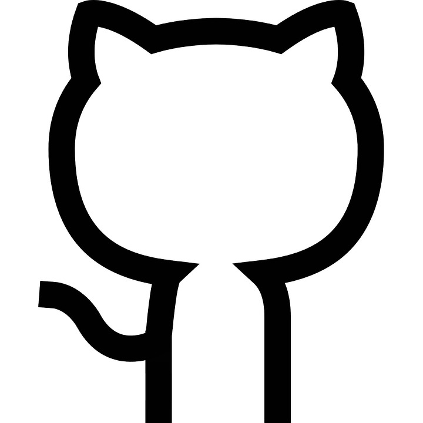

Provided by OpenSpeedtest.com
Über mich
Hi, mein Nickname ist zlELo und ich komme aus Deutschland. Ich entwickle hobbymäßig Programme in der Programmiersprache Python. Ich habe aber auch html, css und ein bisschen js Kenntnisse.
Meine Anforderungen an mich sind, dass jegliche Programme etc. die ich schreibe immer OpenSource sind.
Zudem wird auch oft eine .exe Datei für Windows mit hochgeladen sein, es muss also nichts selber mit py2exe etc. gemacht werden!
Um meine Projekte zu hosten benutze ich das weit verbreitete GitHub! Contributors sind immer willkommen! Übrigens: Diese Website wird auch auf GitHub mit GitHub Pages gehostet.
Meine Projekte sind alle kostenlos und jeder kann mit an dem Code arbeiten! Hier geht's zu meinem GitHub Account:
Mein GitHub Account
Meine Projekte
Ich habe immer wieder neue Projektideen. Projekte an denen ich bereits arbeite und entwickle sind:
- PW-Generator PW-Generator ist ein GUI basierter Passwortgenerator, welcher mit Python geschrieben ist. Ihn gibt es zurzeit in zwei Versionen: "customtkinter version" und die "only tkinter version". Die "customtkinter" Version ist der gleiche Passwortgenerator, bloß dass er das Python Modul customtkinter von Tom Schimansky nutzt. Dadurch hat diese Version eine modernere GUI. Downloaden kannst du das Programm (beide Versionen) einmal als .exe und als .py Datei auf GitHub downloaden. Hier gehts zur Projektseite: PW-Generator Projekt-Seite
- Diese Website Ja, auch diese Website ist OpenSource und eins meiner Projekte. Sie wird mit GitHub Pages gehostet!
- QR-Code-Generator Dieses Projekt ist ein QR-Code Generator der neben dem Standart Link QR-Code auch noch Text QR-Codes, Wifi QR-Codes und Barcodes generieren kann. Kombiniert in einer hübschen "customtkinter" GUI mit einem Auswahlmenü und weiteren bearbeitungsmöglichkeiten der QR-Codes (beispielsweise Farbe)! Zu finden ist der QR-Code-Generator auf meinem GitHub. Hier gehts auf die Projekt-Seite: QR-Code-Generator Projekt-Seite
- Calcualtor Calcualtor ist ein GUI basierter Taschenrechner, welcher mit Python geschrieben ist. Er hat ein einfaches und schlichtes Design und läuft auf den gängigen Systemen Linux und Windows. Hier gehts zur Projektseite Calculator Projekt-Seite
- DelSec DelSec ist wie der bessere Papierkorb von Windows! Er ermöglicht es, Dateien wirklich und komplett zu löschen. Dabei verschlüsselt er die Dateien auch noch, damit falls jemand irgendwie an die Datei kommen sollte, nichts damt anfangen kann. Eine 7zip Datei mit dem reinen .exe Verzeichnis wie auch eine Setup .exe ist enthalten. DelSec Projekt-Seite

Downloads
Meine Programme kannst du alle über GitHub downloaden.